برنج گلستان
رکن اول غذای ایرانی
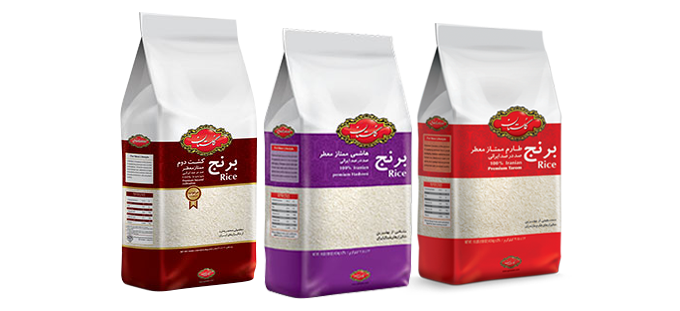


غذایی که قد میکشد؛ وعده غذایی محبوبی كه سفره بدون آن كامل نیست. با برنج است که کدبانوی ایرانی مهارتش را در آشپزی به رخ میکشد.
مرغوبترین برنج دنیا، برنج ایران است و بهترین نوع برنج ایرانی، طارم و هاشمی. دو نوع برنجی كه تنها انتخابهای گلستان به شمار میروند. این برنجها از بهترین شالیزارهای مازندران برداشت شده، پس از كنترل كیفیت در آزمایشگاههای تخصصی گلستان وارد چرخه بستهبندی و در وزنهای مختلف به بازار عرضه میشوند.
عطر و طعم بینظیر برنج گلستان با هیچ برنج دیگری قابل مقایسه نیست. با گلستان، كیفیت زندگی بالاتر از همیشه است. چرا كه مشتریان گلستان؛ لایق بهترین ها هستند.
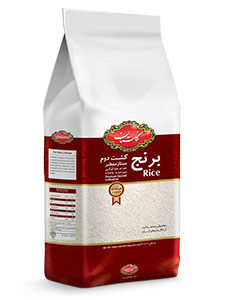
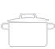
برنج کشت دوم گلستان تجربه متفاوتی از طعم و عطر برنج ایرانی گلستان را ارائه می کند. برنج کشت دوم گلستان در بهترین مزارع فریدونکنار، بعد از برداشت برنج در مرحله اول، کشت می شود.
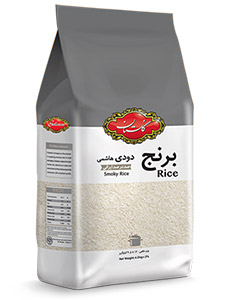
طعم بی نظیر یك وعده غذا با برنج دودی در خاطرات مردمان ایران زمین نقش بسته است. دودی كردن برنج در گذشته یكی از راه های خشك كردن شلتوك برای تبدیل به برنج سفید بود. این فرآیند موجب می شد تا طعم دود بر روی برنج باقی بماند و به مرور وارد ذائقه ایرانیان گردید. امروزه شالیكلوبی ها از خشك كن های جدید و مدرن برای خشك كردن شالی بهره می برند و دیگر خبری از بوی دود نیست. شركت گلستان برای حفظ سلامت برنج با استفاده از روش های سنتی اما استاندارد اقدام به تهیه این برنج كرده است. این محصول به روش خشك كردن هیزمی لایه شلتوك تهیه شده است. طعم و عطر دود این برنج ملایم بوده و به تنهایی نیز قابل دم كردن و استفاده می باشد.

در فرآیند تبدیل شلتوک به برنج و انجام فرآیند بوجاری مقداری زیادی از دانه های برنج شكسته شده و از سایر برنج ها جدا می شوند. در صورتی كه اندازه دانه بزرگتر از نصف برنج باشد اصطلاحأ به آن برنج سرشكسته یا لاشه می گویند و در صورتی اندازه دانه ها تقریباً برابر نصف دانه های برنج باشد به آن برنج نیم دانه می گویند.
شركت گلستان بواسطه تجهیزات مدرن كارخانه شاكیلوبی خود این دو محصول جانبی برنج را به صورت جداگانه به مصرف كننده عرضه می نمایند. برنج نیم دانه گلستان با دستگاه های سورت رنگی با دقت بالا سوت می گردد تا برنج های رنگی، تیره و ناخالصی های آن جدا گردد. مهمترین مزیت این برنج عطر بی نظیر و پاک شده بودن است. برنج نیم دانه گلستان برای تهیه انواع غذاها و دسر های اصیل ایرانی مثل شله زرد، آش، شیر برنج، دلمه، كوفته، و غذاهای كودك حاوی برنج پیشنهاد می گردد.

اين برنج حاصل نيم قرن تجربه شركت گلستان است از آنچه كدبانوی ايرانی در آشپزخانه می خواهد. برنجی منحصر به فرد كه علاوه بر عطر وطعم دلخواه قيمت اقتصادی را فراهم كرده است.

برنج ايرانی گلستان در بسته بندی 10 كيلوگرمی نيز عرضه می گردد. اين برنج مشابه ساير برنج های برند گلستان سورت شده و يكدست می باشد.
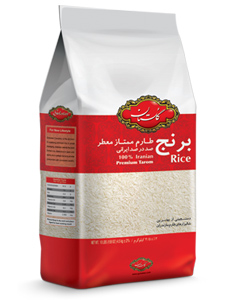
برنج طارم ممتاز معطر گلستان با عطر و طعم استثنایی به عنوان مرغوب ترین برنج صد در صد ایرانی، دستچینی از بهترین شالیزارهای طارم شمال ایران می باشد. برنج طارم گلستان با استفاده از مدرن ترین دستگاه های سورتر لیزری در اوزان مختلف بسته بندی و در بازار عرضه می شود.
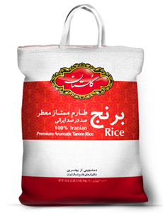
برنج طارم ممتاز معطر کیسه ای گلستان در بسته بندی 10 کیلوگرمی به بازار عرضه می شود. برنج طارم کیسه ای گلستان با عطر و طعم استثنایی، دستچینی از بهترین شالیزارهای طارم شمال ایران می باشد که با استفاده از مدرن ترین دستگاه های سورتر لیزری فرآوری و بسته بندی می شود.
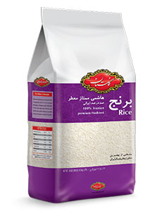
برنج هاشمی ممتاز معطر گلستان از مرغوب ترین شالیزارهای هاشمی استان گیلان تهیه می شود. برنج هاشمی گلستان در مدرن ترین كارخانه فرآوری برنج خاورمیانه، با پیشرفته ترین ماشین های صنعتی و تكنولوژیكی آلمانی تولید و بسته بندی می شود.
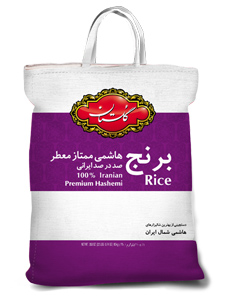
برنج هاشمی ممتاز معطر گلستان از مرغوب ترین شالیزارهای هاشمی استان گیلان تهیه شده است و علاوه بر بسته بندی های یک کیلویی و بیشتر، در بسته های کیسه ای 10 کیلوگرمی نیز به بازار عرضه می شود.
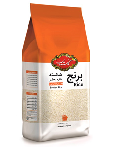
برنج شكسته گلستان محصولی از برنج هاي طارم معطر فريدون كنار می باشد كه در فرآيند توليد شكسته شده اند. اين برنج از لحاظ عطر و طعم مشابه برنج طارم گلستان است ولي به دليل شكسته بودن ميزان چسبندگي بيشتری دارد. این محصول براي استفاده در تهيه غذاهایی مانند شله زرد بهترین انتخاب می باشد و همچنین به دلیل قیمت و کیفیت مناسب جايگزينی برای برنج هاي خارجی می باشد.
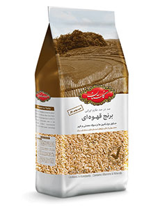
غلات کامل یا سبوسدار بخش مهمی از هر رژیم غذایی را تشکیل میدهند و از جمله سالمترین مواد غذایی محسوب میشوند. برنج قهوهای نیز در زمره غلات کامل قرار دارد. این نوع برنج، طبیعی و تصفیه نشده است. بسیاری از مردم مصرف برنج قهوهای را به خاطر خواص سلامتی که دارد به برنج سفید ترجیح میدهند.
برنج قهوه ای گلستان از برنج مرغوب طارم ایرانی تهیه می شود. برنج قهوه ای گلستان به دلیل داشتن یک لایه نازک سبوس حاوی ویتامین ها، مواد معدنی مفید و فیبر می تواند در پیشگیری از سرطان، جلوگیری از پیشرفت بیماری دیابت، کاهش قند خون و تنظیم متابولیسم هورمون تیروئید و عملکرد سیستم ایمنی بدن موثر باشد.
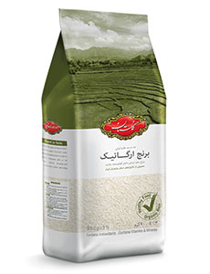
برنج ارگانيک گلستان نوعی از برنج طارم است که در شالیزارهای ویژه محصولات ارگانیک تولید می شود. در این شالیزارها از هیچ گونه فرآیند شیمیائی در پروسه کاشت، داشت و برداشت محصول استفاده نمی شود. از جمله مهمترین فواید برنج ارگانیک جلوگیری از پیشرفت دیابت، افزایش سلامت استخوان ها، جلوگیری از خطر ابتلا به آسم در کودکان است.
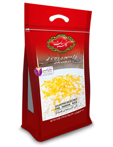
برنج زيپ كيپ گلستان، محصولی باكيفيت منحصر به فرد و يكنواخت، با عطر و طعم دلچسب برنج اصيل ايرانی می باشد . اين محصول برگرفته از بهترين نوع برنج طارم محلی معطر بوجاری شده است كه بوسيله ماشين آلات سورتر ليزری، يكدست شده و بدون دخالت دست توسط دستگاه های تمام اتوماتيك در بسته بندی های زيپ كيپ توليد وعرضه می گردد. برنج زيپ كيپ حاوی محصول زعفران گلستان به عنوان هديه می باشد.